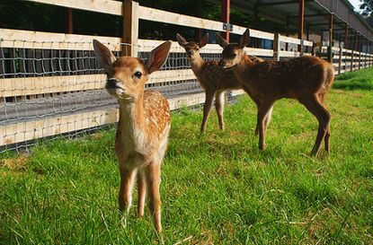

A festival is an extraordinary event celebrated by a community and centering on some
characteristic aspect or aspects of that community and its religion or cultures. It is
often marked as a local or national holiday, mela, or eid. A festival constitutes typical
cases of glocalization, as well as the high culture-low culture interrelationship.[2] Next
to religion and folklore, a significant origin is agricultural. Food is such a vital
resource that many festivals are associated with harvest time. Religious commemoration and
thanksgiving for good harvests are blended in events that take place in autumn, such as
Halloween in the northern hemisphere and Easter in the southernread more...